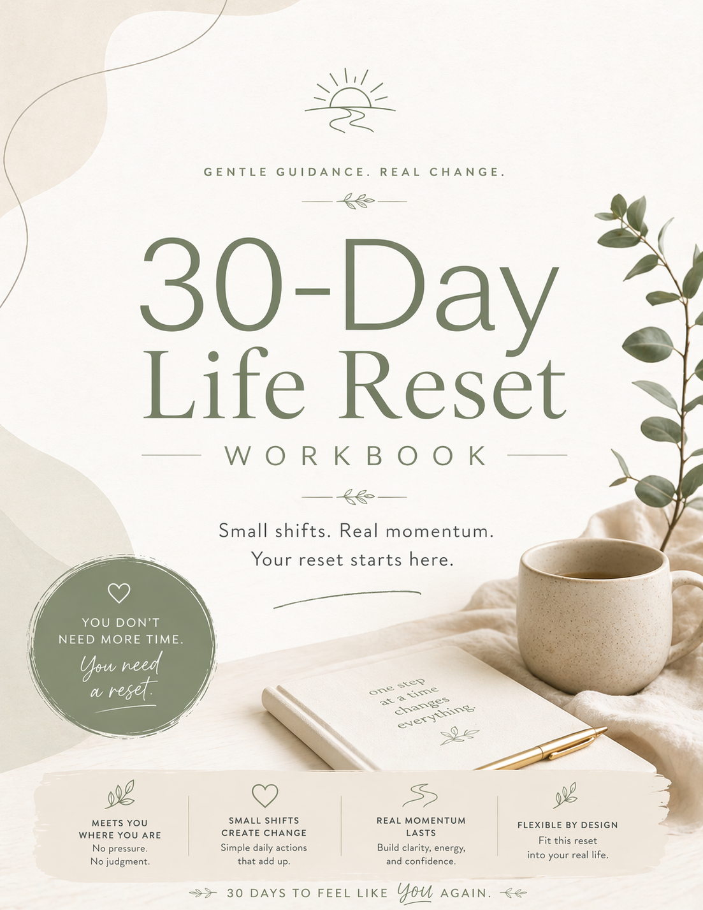
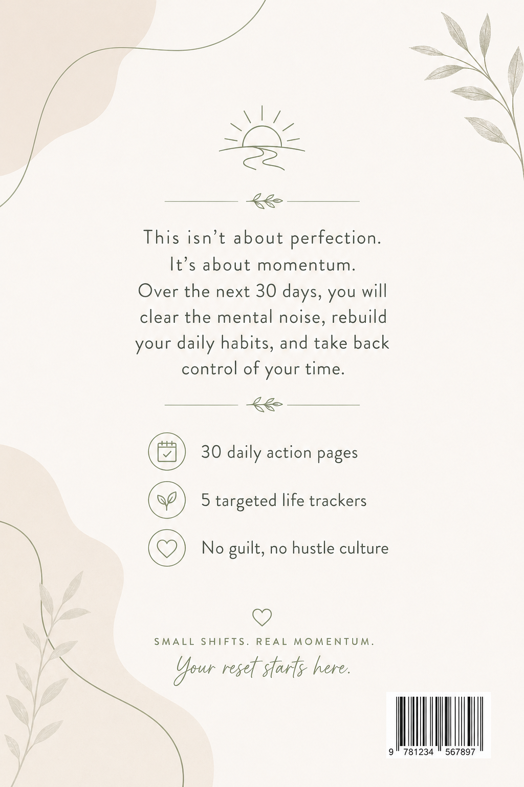

Small shifts. Real momentum.
Your reset starts here.
This workbook is yours. Write in it, fold the pages, skip what doesn't fit, return when it does. It was designed with one belief: that change happens through small, repeated actions — not heroic effort.
Nothing here will fix you, because you aren't broken. The next thirty days are simply a quiet invitation to come back to yourself — at your pace, on your terms.
© 2026 · The 30-Day Life Reset Workbook · For personal use only · Printed on recycled paper or saved to the cloud · Either is fine.
Sixty-six pages · One step at a time.
You picked this up because something feels off. Maybe you've been going through the motions, carrying more than you should, or quietly wishing things were different. That feeling is real — and it makes sense.
This workbook isn't here to fix you. You're not broken. It's here to give you a small, steady path back to yourself.
Over the next 30 days, you'll take one focused step each day. Nothing dramatic. Nothing that requires you to overhaul your life overnight. Just small, concrete actions that build on each other — one at a time, at your pace.
Some days will feel easy. Some won't. Both are fine. You don't need to be motivated every day — you just need to show up when you can.
Feeling stuck isn't a personality flaw. It's what happens when you've been in survival mode long enough that forward motion starts to feel impossible.
When life gets full — work, responsibilities, relationships, all of it at once — your brain shifts its energy toward managing, not growing. You stay in the loop of what's urgent and never quite get to what matters.
The result? Days that blur together. A vague sense that you should be doing more, feeling more, being more. And a creeping exhaustion that has nothing to do with sleep.
Here's what actually helps: not a bigger plan, but a smaller one. Not more willpower, but better structure. Not a dramatic reset, but a gentle one.
Each day has its own page. You'll find six small sections, each designed to take only a few minutes.
If you want to begin right now — here's your starting point.
Read the goal and tasks. That's it for now.
Do it today. One is enough.
Even a few words count.
Here's what the next 30 days will look like at a glance. Each week builds on the last — gently, on purpose.
Where are you right now? Rate each area from 1 to 5. There are no right answers — just honest ones.
| Life area | Your rating · 1–5 | One word that describes it |
|---|---|---|
| Energy & Sleep | 12345 | |
| Work / Purpose | 12345 | |
| Relationships | 12345 | |
| Body & Movement | 12345 | |
| Home & Space | 12345 | |
| Mind & Stress | 12345 | |
| Fun & Rest | 12345 | |
| Finances | 12345 |
If things shift over the next 90 days, what changes? This isn't a goal list. It's a soft picture — a direction, not a destination.
This month, focus on one thing. Look back at your Life Audit — which area would make the biggest difference if it shifted, even slightly?
Three soft rules that make this work for you. Not rigid commitments — agreements you make with yourself, flexible by design.
Energy & Awareness
This week is light on purpose. You're not here to overhaul your routine or set big goals. You're here to notice — how you feel, what's draining you, and where there might be a little more room to breathe.
Take 10 minutes. Answer honestly. There are no wrong answers here.
Habits & Productivity
Last week was about noticing. This week is about starting — carefully and without pressure. You'll build one morning habit. One. The proof that you can choose a small behavior and stick with it matters more than the habit itself.
Take 10 minutes. Answer honestly. There are no wrong answers here.
Body, Mind, Environment
Week 3 is where you start to feel the difference — not dramatically, but in small ways. A little more ease. A little less friction. A quieter mind at the end of the day. This week adds movement: short, simple, not about fitness.
Take 10 minutes. Answer honestly. There are no wrong answers here.
Identity, Values, Future
Week 4 isn't about adding more. It's about making sense of what's already here — who you've been, what you actually value, and who you want to keep becoming. The tasks get quieter. The questions get bigger. That's intentional.
Take 10 minutes. Answer honestly. There are no wrong answers here.
Eight pages to track what's actually happening — not what you think should be happening.
Track up to six habits across all 30 days. Fill in the box each day you complete it. Leave it blank if you missed. No guilt — just data.
| Day | Habit 1 | Habit 2 | Habit 3 | Habit 4 | Habit 5 | Habit 6 |
|---|---|---|---|---|---|---|
| NAME → | ||||||
| 01 | ||||||
| 02 | ||||||
| 03 | ||||||
| 04 | ||||||
| 05 | ||||||
| 06 | ||||||
| 07 | ||||||
| 08 | ||||||
| 09 | ||||||
| 10 | ||||||
| 11 | ||||||
| 12 | ||||||
| 13 | ||||||
| 14 | ||||||
| 15 | ||||||
| 16 | ||||||
| 17 | ||||||
| 18 | ||||||
| 19 | ||||||
| 20 | ||||||
| 21 | ||||||
| 22 | ||||||
| 23 | ||||||
| 24 | ||||||
| 25 | ||||||
| 26 | ||||||
| 27 | ||||||
| 28 | ||||||
| 29 | ||||||
| 30 | ||||||
| TOTAL | __/30 | __/30 | __/30 | __/30 | __/30 | __/30 |
One circle per day. No analysis needed — just mark what's true. 😊 good · 😐 okay · 😔 hard.
Rate each category each week from 1 (struggling) to 5 (solid). Track what's actually happening — not what should be.
| W1 | W2 | W3 | W4 | |
|---|---|---|---|---|
| Sleep quality | ||||
| Energy level | ||||
| Movement / activity | ||||
| Eating / nourishment | ||||
| Water intake | ||||
| Physical tension or pain |
This isn't about output. It's about whether your attention went where you wanted it to.
| W1 | W2 | W3 | W4 | |
|---|---|---|---|---|
| Felt focused (1–5) | ||||
| Avoided distractions (1–5) | ||||
| Got one important thing done | ||||
| Phone use felt intentional |
Track which areas you've touched and what's changed. Order doesn't have to be complete — it has to be present.
| Area | Cleared | Week | Still to do |
|---|---|---|---|
| Desk · workspace | ○ Yes○ No | ||
| Bedroom · sleep space | ○ Yes○ No | ||
| Kitchen counter | ○ Yes○ No | ||
| Bag · wallet · car | ○ Yes○ No | ||
| Digital · phone · email | ○ Yes○ No | ||
| Other ___________ | ○ Yes○ No |
Light-touch. This isn't a budget tool — just a place to notice patterns.
| W1 | W2 | W3 | W4 | |
|---|---|---|---|---|
| Felt in control of spending (1–5) | ||||
| Had at least one unplanned purchase | ||||
| Checked account balance | ||||
| One money stress I'm carrying |
Track the quality of your connections, not the quantity.
| W1 | W2 | W3 | W4 | |
|---|---|---|---|---|
| Felt connected to someone (1–5) | ||||
| Had one real conversation | ||||
| Reached out to someone first | ||||
| Felt lonely at some point |
Three small libraries to keep going long after Day 30 — when life derails, when you want to deepen, when you want to begin again.
Every habit on this list takes 5 minutes or less. Use them as inspiration, as replacements when your main habit breaks down, or as a menu when you're not sure what to do next.
For when life derails and you need a way back in.
This mini-reset is for the hard weeks — when work piles up, something goes wrong, or you just fall off completely. It's not a substitute for the full 30 days. It's a bridge back.
Seven days. One small thing each day. That's all.
Turn the page when you're ready.
The workbook ends. Life doesn't. Here's a simple framework for staying in motion for the next two months — without needing a new program or a fresh start.
Pick the one habit from your 30 days that made the most difference. Your only job in Month 2 is to deepen it.
Keep your Month 2 habit and add one new small behavior from the 50 Tiny Habits list.
Fill this in at Day 90 — about three months from when you started. Come back to it. Notice what's true that wasn't true before.
Thirty days. You showed up, adjusted, came back, and kept going. That's not a small thing — that's the whole thing.
Whatever happens next, you now know what a re-entry looks like. You know what to do when things get hard. Come back. Start small. One thing. That's all it's ever taken.
